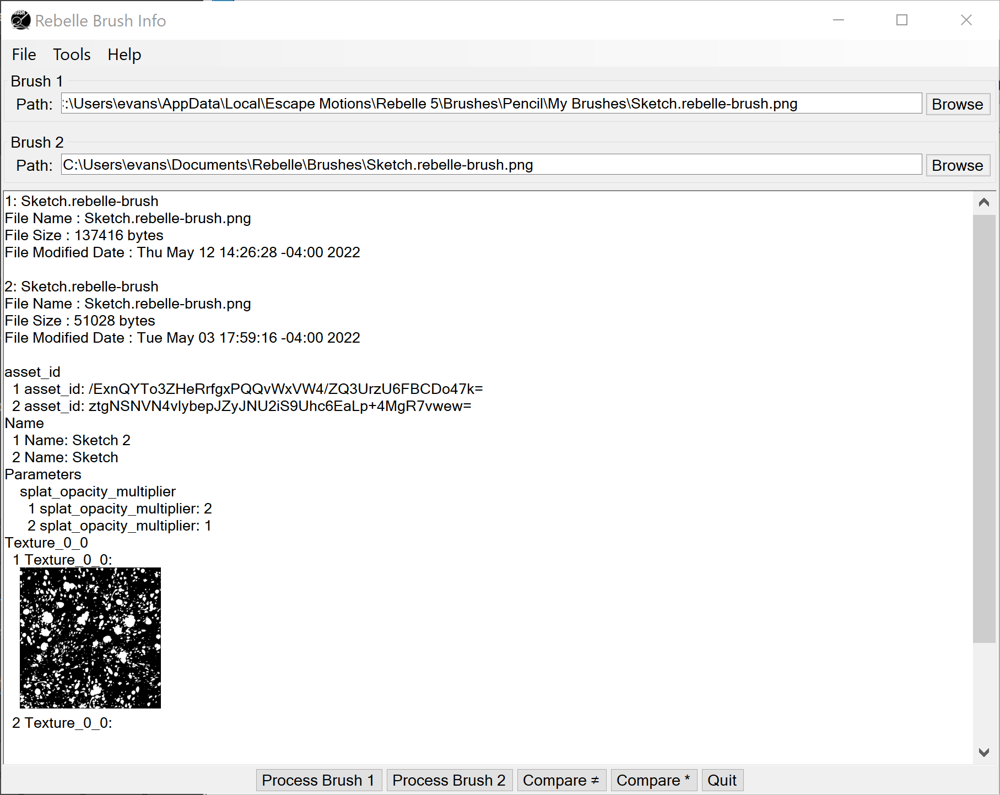

Rebelle Brush Info is a C# Windows application designed to read a Rebelle brush configuration and display it in a readable form. It can also compare two brushes and show the differences. This can be useful for seeing the structure of the brush parameters and to easily compare the differences between two brushes. It is easier to compare brushes this way than by hunting through the Brush Creator dialog in Rebelle.
Acknowledgements are at the end of the page.
The developer of this application is not associated with Escape Motions. Any information presented here that is not in the Rebelle manual has been obtained by observation.
Rebelle stores its information in PNG files. These can be found in its Library Folder under Brushes, or you may have exported brush presets to some other place. The brush information is stored as metadata in the PNG files. This application extracts that data and presents it, primarily as name/value pairs for the parameters. These may be organized by groups, and image data is converted to an image in the output.
The names may not be the same as presented in Rebelle, but it is usually easy to figure out the correspondences. The values may also be different. A value represented by a slider going from 0 to 100 may actually be a decimal number in the range of 0 to 1.
The Rebelle library folder is typically located in %LOCALAPPDATA%\Escape Motions\<Rebelle version>.
The interface has a place to enter the names of two brushes.The buttons at the bottom process either the first or second brush, showing all the parameters, Compare ≠, showing just the parameters that are different, Compare *, showing all parameters in both brushes, or Quit.
This is a screen shot of the Rebelle Brush Info interface.

Save Info as RTF
Saves the output area on the main screen as RTF. You will prompted for the file name.
Quit
Exits the application.
Has items Brush 1 and Brush 2, each of which has the following subitems:Process
Does the same thing as the Process Brush 1 or Process Brush 2 buttons. All of the parameters for that brush are shown.
Compare to Defaults ≠
Brushes have two sets of parameters named Parameters and ParametersEx (among others). In the case where the brush is not currently set to its defaults, there are also DefaultParameters and DefaultParametersEx, which contain the default parameters. This option compares these parameters to the defaults, showing only the differences. Any other items are ignored.
Compare to Defaults *
Does the same thing as Compare to Defaults ≠ but shows all settings, not just the ones that are different.
Overview
Brings up a window with this HTML file. It works as a rudimentary browser with links and Back and Forward buttons.
About
Gives information about this application including the version.
There are context (right-click) menus on the output area on the main screen (which has Rich Text) and also on all the text entries and larger text areas. They have Cut, Copy, Paste, and other items that should be common or self explanatory.
If you are installing from a download, just unzip the files into a directory somewhere convenient. Then run it from there. If you are installing from a build, copy these files and directories from the bin/Release directory to a convenient directory.
To uninstall, just delete these files.
Rebelle Brush Info uses the NuGet packages MetaDataExtractor, Newtonsoft.Json, and XmpCore. Clip Studio Paint is a product of Escape Motions.